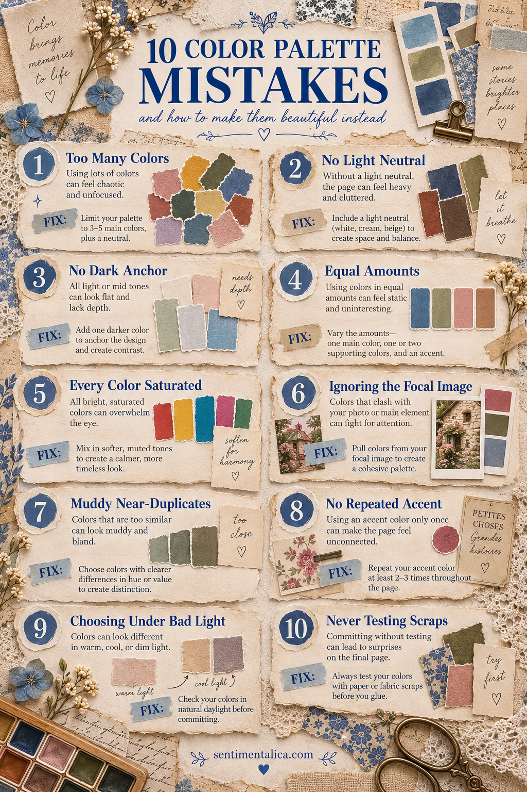
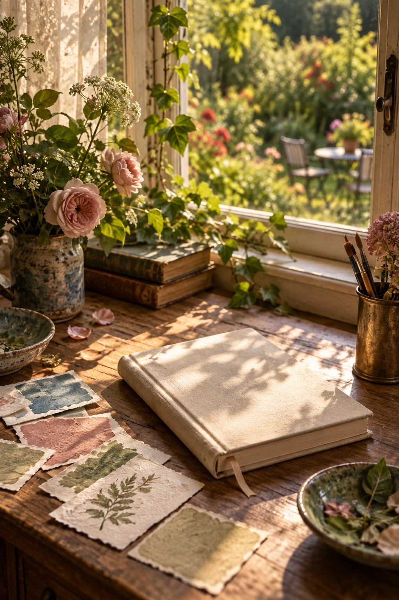

Sometimes every paper is lovely on its own, yet the finished page feels heavy, flat or strangely unsettled. That is usually not a lack of taste. It is simply a palette problem with a practical fix.

1. Using too many colors
More color does not always create more interest. Choose three main colors and one neutral. Put the remaining scraps away before gluing.
2. Forgetting a light neutral
Cream, linen, ivory or pale paper gives the eye somewhere to rest. If a page feels crowded, enlarge the light area before removing the focal image.
3. Having no dark anchor
A page made entirely from pale and middle tones can drift. Add one darker value through thread, ink, a narrow mat or a small piece of deep paper.
4. Giving every color equal space
Equal amounts often feel static. Let one color lead, one support and one appear only as an accent. A loose 60–30–10 balance is enough.
5. Making every color saturated
If everything is bright, nothing feels special. Surround one clear color with softer, dustier versions so the accent keeps its energy.
6. Ignoring the focal image
The photograph, postcard or main illustration should set the palette. Pull colors from it instead of forcing it into a collection chosen separately.
7. Choosing muddy near-duplicates
Three similar grey-greens may technically coordinate, but they can blur together. Change the value or temperature so each color has a distinct job.
8. Using an accent only once
One isolated pink or blue scrap can look accidental. Repeat it two or three times in tiny amounts: a stitch, label edge or pencil mark.
9. Choosing colors under poor light
Warm bulbs can disguise grey or green casts. Check important combinations near a window before committing glue.
10. Never testing the scraps together
Make a temporary pile or photograph the arrangement. Remove one piece, then compare. The quieter version is often stronger.
A reliable four-role palette
When you feel unsure, choose a dark anchor, a strict light neutral, a supporting mid-tone and one real accent. These are roles rather than fixed colors. Walnut, cream, moss and faded rose can work; so can navy, parchment, dusty blue and rust.

Color should make the page easier to understand. If you can identify what leads, what supports, what grounds and what brightens, the palette is already doing its job.
Test the palette before you glue
Place the four chosen colors beside the focal image and take a quick phone photograph. Convert the photograph to black and white. You should see a clear light, middle and dark range; if everything becomes the same grey, swap one paper for a lighter or darker value.
Next, return to color and cover the accent with your finger. The page should still feel calm and complete. Uncover it: the accent should add life without changing the whole story. This two-minute check prevents most palette repairs later.
Also notice the materials themselves. A glossy blue label and faded blue book paper may share a hue but create very different moods. Color works together with surface, age and texture. When the page feels too polished, add something fibrous or worn. When it feels too dusty, add one clean-edged detail.
You do not need to obey a palette perfectly. Its purpose is to make choices easier. Once the page has a clear structure, one small unexpected color can make it feel personal rather than coordinated by formula.